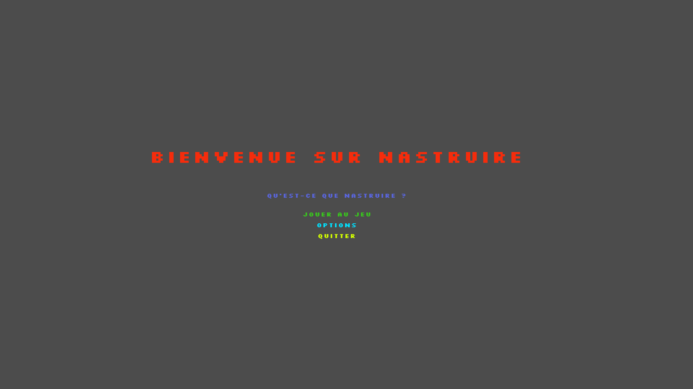

Nastruire est apparu grâce à la collaboration d'excellents amis qui un jour ont décidé de participer à un concours informatique. Ils voulaient aider la planète et la sauver mais à leur échelle ils ne pouvaient pas faire grand-chose. Ils ont donc décidé d'utiliser leurs talents et leurs compétences en créant un jeu vidéo dans le but de sensibiliser tout le monde mais surtout les plus petits. En effet, si nous voulons sauver notre planète il faut éduquer correctement les jeunes pour qu'ils fassent les bons gestes tout au long de leur vie. Nastruire est apparu le 5 mai après 3 mois de travail intensif. Quoi de mieux qu'un jeu vidéo pour instruire les gens à ramasser les déchets et par la suite à les trier dans les bonnes poubelles de recyclage.
Vous pouvez choisir entre 2 cartes pour aller ramasser les déchets. Vous apparaissez sur la carte que vous avez choisie et votre but est de ramasser les 50 déchets poser sur la map. Dès que vous ramassez un déchet, celui-ci apparaît dans votre inventaire et y reste jusqu'au moment où vous le déposer dans la bonne poubelle de tri.Pour pouvoir vous instruire un peu plus, l'équipe de Nastruire a fait des recherches sur internet pour pouvoir vous informer de combien de kg de déchets sont jetés chaque année sur le sol, sur le temps de décomposition des déchets et de leurs impacts sur l'environnement. C'est pour cela que dès que vous ramassez un déchet, il faut le jeter dans la poubelle adéquate. Une fois le déchet déposé dans la bonne poubelle, un message s’affiche et vous indique quel est l’objet vous pouvez créer grâce au tri que vous venez de faire.
Mais ce n'est pas la seule chose que l'équipe de Nastruire s'est occupée de faire. Elle voulait aller encore plus loin. Elle voulait vous informer sur les dangers d'internet et pouvoir vous instruire. C'est pour cela que dans une autre partie de notre application, vous trouverez des cours et des exercices sur ce qu'est internet, ses dangers, le phishing et pleins d'autres choses que l’on vous invite à aller voir et à aller faire. Notre but est vraiment de faire en sorte que vous vous fassiez moins arnaquer sur internet et que vous fassiez plus attention. Internet est très dangereux.
